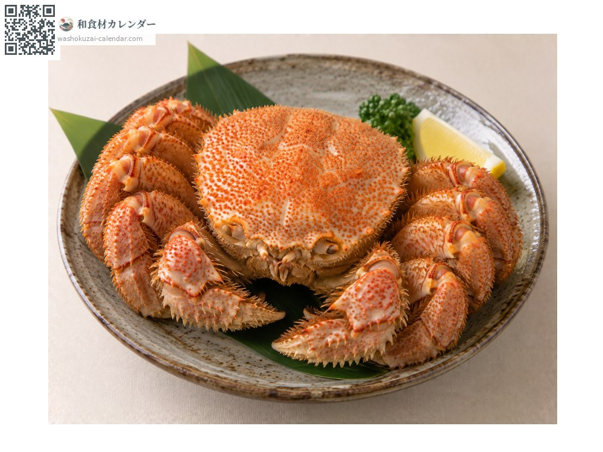
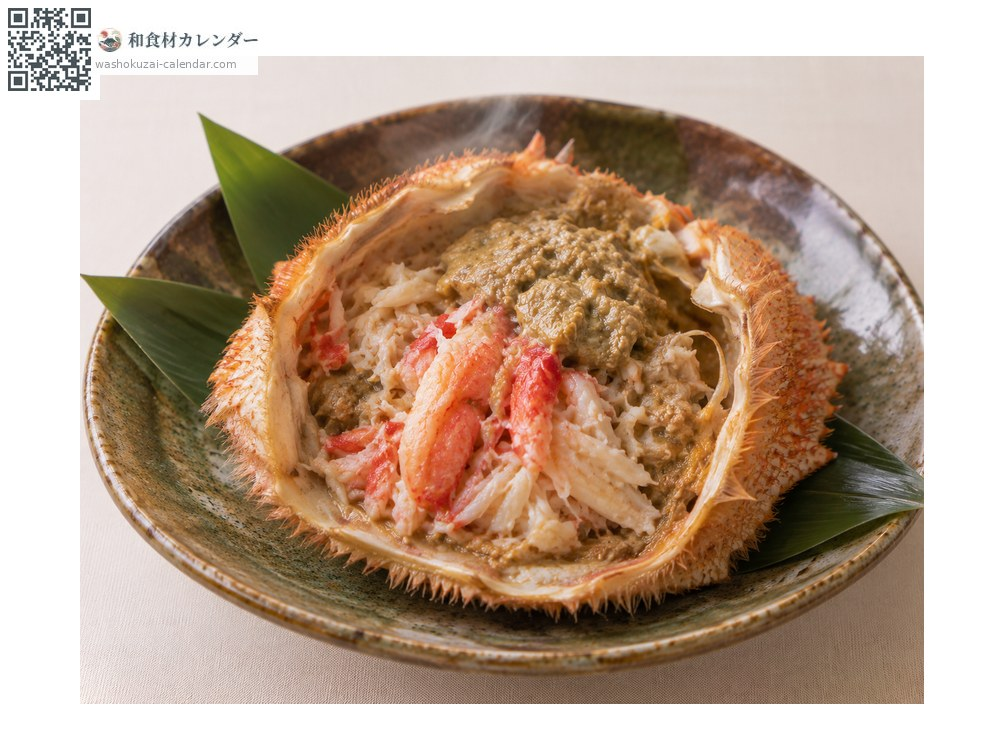
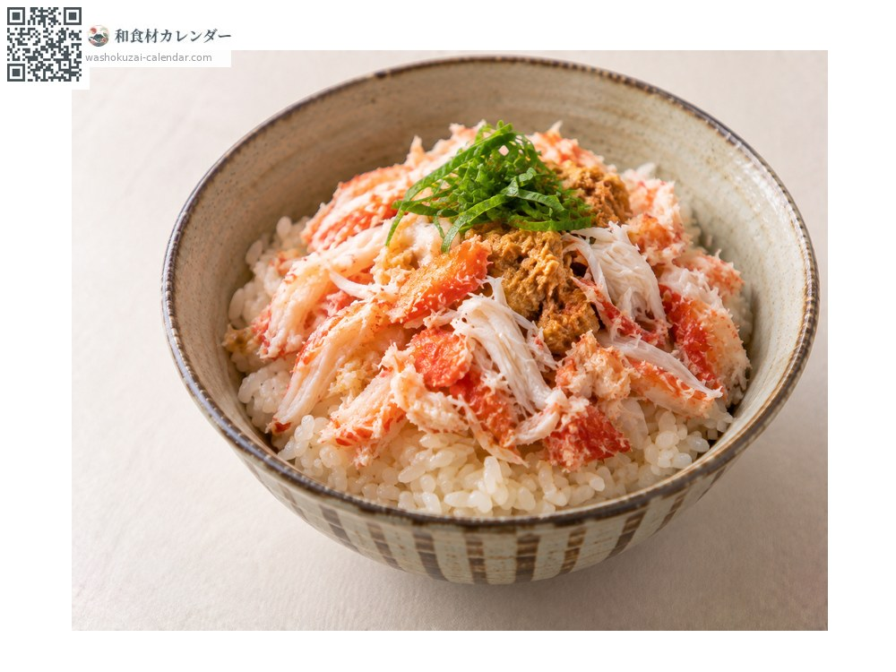
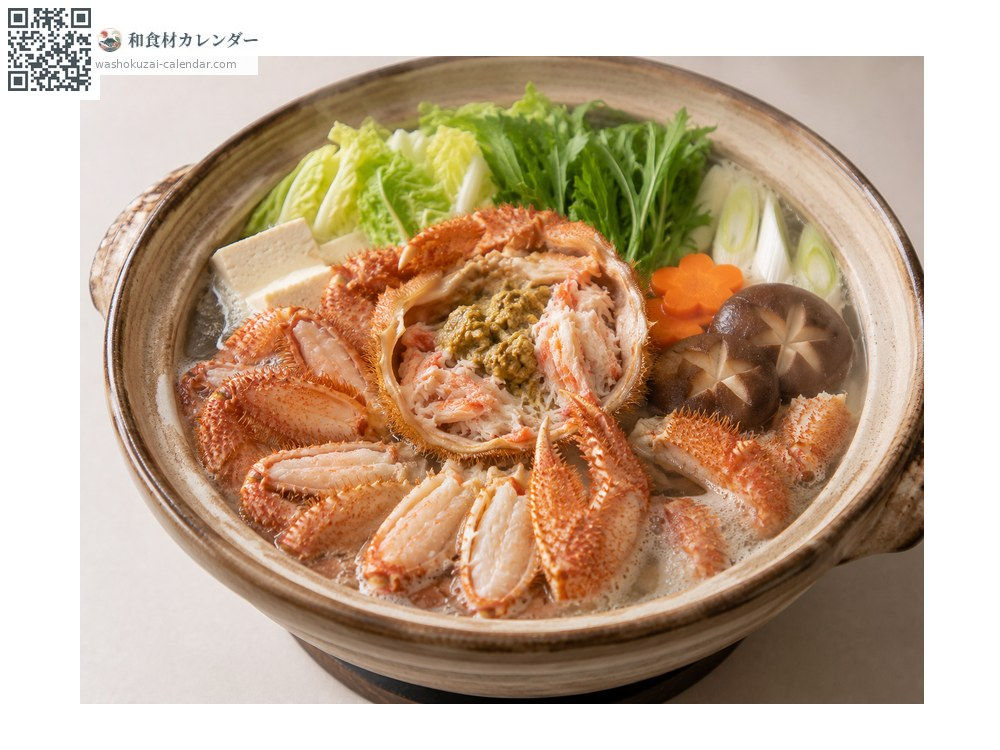

อาหารทะเล
ปูขนเคงานิ
ケガニ けがに kegani
ชื่ออื่นkegani
อร่อยที่สุดในเดือน ม.ค., ก.พ., มี.ค., ธ.ค.

ช่วงที่อร่อยที่สุด
ม.ค.
ก.พ.
มี.ค.
เม.ย.
พ.ค.
มิ.ย.
ก.ค.
ส.ค.
ก.ย.
ต.ค.
พ.ย.
ธ.ค.
ช่วงอร่อยที่สุดมีจำหน่าย
วิธีปรุง

ปูต้มทั้งตัว
ต้มเกลือเป็นพื้นฐาน มันปูเข้มข้นมาก

มันปูอุ่นในกระดอง
อุ่นในกระดอง เป็นของแกล้มเหล้า

ข้าวหน้าเนื้อปู
แกะเนื้อหุงพร้อมข้าว

หม้อไฟ
ให้น้ำซุปที่ดีมาก
วิธีเลือก
ยกแล้วรู้สึกหนัก กระดองแข็ง ขนขึ้นหนาแน่น
วิธีเก็บรักษา
ที่ต้มแล้วแช่เย็นได้ 2-3 วัน
แหล่งผลิตหลัก
เกร็ดน่ารู้
แต่ละพื้นที่ในฮอกไกโดมีฤดูจับต่างกัน จึงหมุนเวียนมีขายเกือบทั้งปี ขึ้นชื่อเรื่องมันปูเข้มข้นมากกว่าเนื้อ